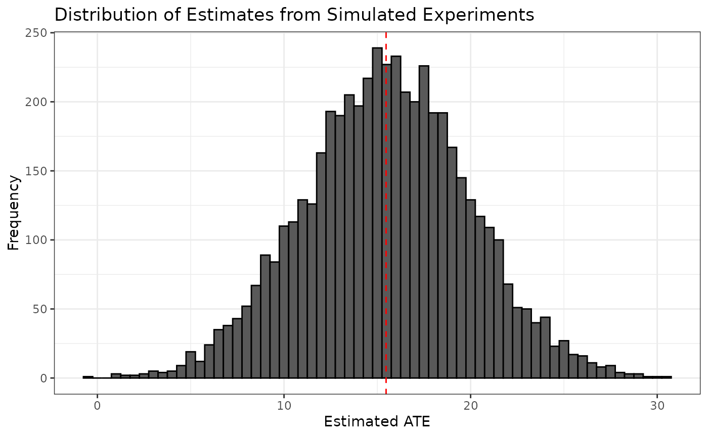

anchoring.Rmd
library(designrbi)
schedule <- anchor |>
as_schedule(treatment = d, response = y)
schedule
#> # A tibble: 74 × 4
#> d y Y11 Y73
#> <fct> <dbl> <dbl> <dbl>
#> 1 11 16 16 NA
#> 2 11 5 5 NA
#> 3 73 20 NA 20
#> 4 73 40 NA 40
#> 5 11 73 73 NA
#> 6 73 70 NA 70
#> 7 11 6.5 6.5 NA
#> 8 73 12 NA 12
#> 9 11 15 15 NA
#> 10 11 70 70 NA
#> # ℹ 64 more rows
imputed_schedule <- impute_unobserved(schedule, tau = ate_hat)
imputed_schedule
#> # A tibble: 74 × 4
#> d y Y11 Y73
#> <fct> <dbl> <dbl> <dbl>
#> 1 11 16 16 31.5
#> 2 11 5 5 20.5
#> 3 73 20 4.53 20
#> 4 73 40 24.5 40
#> 5 11 73 73 88.5
#> 6 73 70 54.5 70
#> 7 11 6.5 6.5 22.0
#> 8 73 12 -3.47 12
#> 9 11 15 15 30.5
#> 10 11 70 70 85.5
#> # ℹ 64 more rows
sim1 <- imputed_schedule |>
sim_experiment(reps = 1)
sim1
#> # A tibble: 74 × 3
#> replicate d y
#> <int> <fct> <dbl>
#> 1 1 73 31.5
#> 2 1 11 5
#> 3 1 73 20
#> 4 1 73 40
#> 5 1 11 73
#> 6 1 73 70
#> 7 1 11 6.5
#> 8 1 11 -3.47
#> 9 1 11 15
#> 10 1 73 85.5
#> # ℹ 64 more rows
anchor
#> d y
#> 1 11 16.0
#> 2 11 5.0
#> 3 73 20.0
#> 4 73 40.0
#> 5 11 73.0
#> 6 73 70.0
#> 7 11 6.5
#> 8 73 12.0
#> 9 11 15.0
#> 10 11 70.0
#> 11 73 25.0
#> 12 11 15.0
#> 13 73 39.0
#> 14 11 22.0
#> 15 73 43.0
#> 16 73 9.0
#> 17 73 8.0
#> 18 73 74.0
#> 19 11 6.0
#> 20 73 30.0
#> 21 11 3.0
#> 22 73 58.0
#> 23 73 21.0
#> 24 73 20.0
#> 25 73 18.0
#> 26 73 42.0
#> 27 11 30.0
#> 28 73 65.0
#> 29 11 8.0
#> 30 11 15.0
#> 31 73 20.0
#> 32 11 15.0
#> 33 11 9.0
#> 34 73 50.0
#> 35 73 47.0
#> 36 11 30.0
#> 37 11 9.0
#> 38 73 30.0
#> 39 73 40.0
#> 40 11 8.0
#> 41 73 10.0
#> 42 73 21.0
#> 43 73 50.0
#> 44 11 15.0
#> 45 73 50.0
#> 46 11 15.0
#> 47 73 30.0
#> 48 73 10.0
#> 49 73 40.0
#> 50 11 8.0
#> 51 73 30.0
#> 52 11 15.0
#> 53 11 3.0
#> 54 11 5.0
#> 55 73 50.0
#> 56 73 20.0
#> 57 11 50.0
#> 58 11 10.0
#> 59 73 26.0
#> 60 11 15.0
#> 61 73 16.0
#> 62 73 6.0
#> 63 11 60.0
#> 64 11 15.0
#> 65 73 35.0
#> 66 73 90.0
#> 67 73 40.0
#> 68 11 16.0
#> 69 73 60.0
#> 70 73 32.0
#> 71 11 25.0
#> 72 73 60.0
#> 73 11 26.7
#> 74 11 28.0
sim5000 <- imputed_schedule |>
sim_experiment(reps = 5000)
head(sim5000)
#> # A tibble: 6 × 3
#> replicate d y
#> <int> <fct> <dbl>
#> 1 1 11 16
#> 2 1 73 20.5
#> 3 1 11 4.53
#> 4 1 11 24.5
#> 5 1 11 73
#> 6 1 11 54.5
tail(sim5000)
#> # A tibble: 6 × 3
#> replicate d y
#> <int> <fct> <dbl>
#> 1 5000 11 44.5
#> 2 5000 11 16.5
#> 3 5000 11 25
#> 4 5000 11 44.5
#> 5 5000 73 42.2
#> 6 5000 73 43.5
sim5000_estimates <- sim5000 |>
group_by(replicate) |>
summarize(ate_hat = diff_in_means(y, d))
sim5000_estimates
#> # A tibble: 5,000 × 2
#> replicate ate_hat
#> <int> <dbl>
#> 1 1 8.78
#> 2 2 12.3
#> 3 3 15.9
#> 4 4 18.9
#> 5 5 15.3
#> 6 6 13.1
#> 7 7 21.0
#> 8 8 12.5
#> 9 9 25.1
#> 10 10 12.1
#> # ℹ 4,990 more rows
ggplot(sim5000_estimates, aes(x = ate_hat)) +
geom_histogram(binwidth = 0.5, color = "black") +
geom_vline(xintercept = ate_hat, color = "red", linetype = "dashed") +
labs(title = "Distribution of Estimates from Simulated Experiments",
x = "Estimated ATE",
y = "Frequency") +
theme_bw()